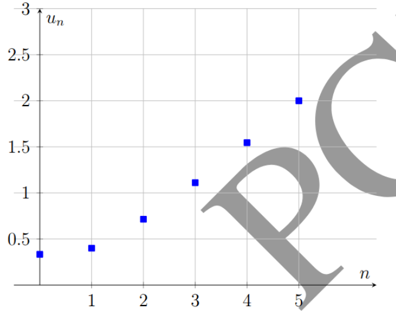
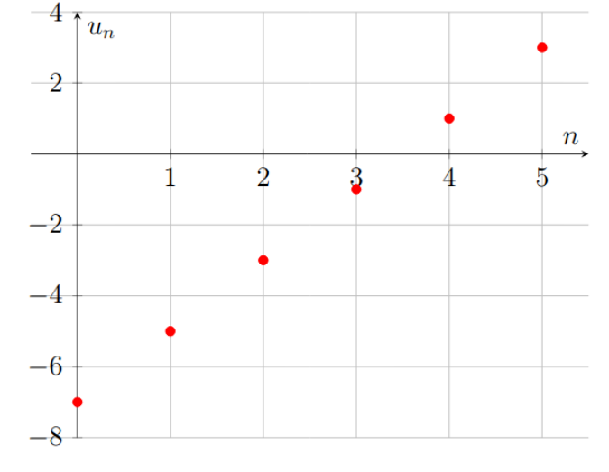
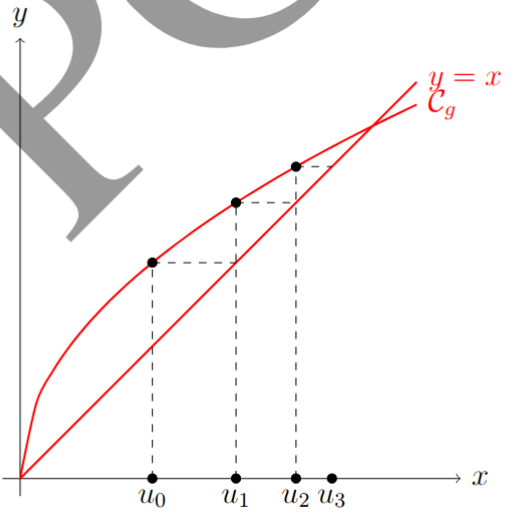

Dans la vie courante comme dans de nombreuses sciences (économie, biologie, informatique), on s'intéresse fréquemment à l'évolution de grandeurs au cours du temps, étape par étape : l'évolution d'une population, le capital placé sur un compte bancaire, ou encore le nombre de vues d'une vidéo jour après jour.
Mathématiquement, une suite numérique permet de modéliser des phénomènes discrets (qui évoluent par « sauts » successifs), par opposition aux fonctions numériques d'une variable réelle qui modélisent des phénomènes continus.
On appelle suite numérique toute fonction définie de \( \mathbb{N} \) ou d'une partie \( E \) de \( \mathbb{N} \) vers \( \mathbb{R} \).
On note :
\( \begin{aligned} U :\quad &\mathbb{N} \rightarrow \mathbb{R} \\ &n \mapsto U_n \end{aligned} \)
Le réel \( U_n \) est appelé terme général ou terme d'indice \( n \).
L'ensemble des termes de la suite est noté \( (U_n) \) et \( n\in\mathbb{N} \) ou \( (U_n)_{n\in\mathbb{N}} \).
Lorsqu'une suite \( (U_n) \) est exprimée en fonction de \( n \), alors on dit que la suite \( (U_n) \) est définie par une formule explicite et on note :
\( U_n=f(n) \).
Exemple
Soient \( (u_n) \) et \( (v_n) \) des suites définies par :
\( u_n=2n^2+1 \)
et
\( v_n=\dfrac{n^2-4}{2n},\quad n\in\mathbb{N}^{*} \)
Calculer :
\( u_0 \) ; \( u_{10} \) ; \( u_{50} \)
\( v_1 \) ; \( v_{10} \) ; \( v_{50} \)
Solution
Définition
Lorsque la suite \( (U_n) \) est définie par une relation entre \( U_n \) et \( U_{n+1} \), alors on dit que \( (U_n) \) est définie par une relation de récurrence.
\( \left\{ \begin{array}{rcl} u_{0}&=&\alpha\\ u_{n+1}&=&2u_n-3 \end{array} \right. \qquad,\qquad \left\{ \begin{array}{rcl} v_{1}&=&\alpha\\ v_{n+1}&=&f(v_n) \end{array} \right. \)
NB : Par exemple, pour calculer \( u_p \), il faudrait effectuer \( p \) calculs successifs.
Exemple
\( \begin{cases} u_0=2\\ U_{n+1}=\dfrac{2U_n+3}{U_n+1} \end{cases} \)
Calculer les cinq premiers termes de \( u_n \).
Solution
Exercice d'application
Dans chacun des cas suivants, calculer les \(6\) premiers termes de la suite \( U_n \).
Correction
Exemple
Représenter les 6 premiers termes de la suite \( (u_n) \) définie par :
\( u_n=\dfrac{n^2+1}{2n+3} \)
Solution
La représentation graphique est constituée des points :
\( (0,\frac13), (1,\frac25), (2,\frac57), (3,\frac{10}{9}), (4,\frac{17}{11}), (5,2) \).

Exemple
La suite \( u_n=2n-7 \) est représentée par les points \( (n,u_n) \) pour \( n=0,1,2,3,4,5 \).
Les points obtenus sont :
\( (0,-7), (1,-5), (2,-3), (3,-1), (4,1), (5,3) \).

Soit :
\( \begin{cases} u_0=\alpha,\\ u_{n+1}=g(u_n), \end{cases} \)
où \( g \) est la fonction associée à la suite \( (u_n) \).
On trace \( C_g \), ainsi que la première bissectrice \( y=x \).
Par une méthode graphique de projection, on construit les termes successifs de la suite \( (u_n) \) en suivant les étapes suivantes :
Ce procédé, appelé construction par itération graphique, permet de visualiser l'évolution des termes de la suite \( (u_n) \) et d'étudier son comportement (convergence, divergence ou oscillation).
Exemple
Soit \( (u_n) \) la suite définie par :
\( u_0=2 \)
et pour tout \( n\in\mathbb{N} \),
\( u_{n+1}=2\sqrt{u_n}. \)
Construire les 6 premiers termes de \( (u_n) \).
Solution
Soit \( f \) la fonction définie sur \( [0;+\infty[ \) par :
\( f:x\mapsto 2\sqrt{x}. \)
Ainsi, pour tout \( n\in\mathbb{N} \),
\( u_{n+1}=f(u_n). \)

Exercice d'application
b) \( u_n=2n-7 \)
Soit \( (u_n)_{n\in\mathbb{N}} \) la suite définie par :
\( \begin{cases} u_{n+1}=\sqrt{5u_n}+1\\ u_0=1 \end{cases} \)
Correction
Soit \(\left(u_n\right)\) une suite numérique.
Étudier le sens de variation d'une suite \( \left(u_n\right) \) consiste à déterminer si elle est croissante, décroissante ou constante.